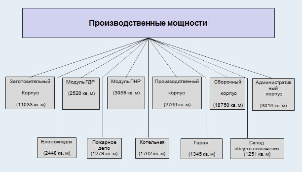

Історія
ПАТ завод «Точмаш» - один з провідних виробників черв’ячних редукторів та мотор-редукторів в Україні. Маючи більш ніж 25-літній досвід роботи та власне ливарне, заготівельне, механічне, збиральне виробництво, що дозволяє забезпечувати замкнутий цикл виробництва. Це означає високий контроль якості на кожному з етапів виробництва та дозволяє створювати якісну продукцію за доступною ціною для споживачів.
На сьогоднішній день ПАТ завод «Точмаш» пропонує якісні черв’ячні редуктори моделей 1Ч-30, 2Ч-30, 2Ч-40, 2МЧ-30, 2МЧ-40, 2Ч-63, 5Ч-100 та мотор-редуктори 2Ч-30, 2Ч-40, 2Ч-63 універсального застосування, які є необхідними для зміни крутильного моменту і частоти обертання, там де є високі вимоги до надійності механізму.
Виробничі потужності підприємства
Заготівельний корпус
Виробнича частина - залізобетонний каркас в конструкціях одноповерхових виробничих будівель.
- В осях 1-13 будівля обладнана кран-балками вантажопідйомністю до 5 тон
- Корпус розбитий на 5 однакових прольотів 18Х72
- Крок колон 18х6, покриття зі збірних залізобетонних панелей - оболонок типу КЖС (3х18), що укладаються по опорних балок довжиною 6 і 12 м
- Висота поверху - 7,8 м
- 30Х96 метровий проліт цеху гарячого штампування заготівельного корпусу обладнаний мостовим краном вантажопідйомністю 20 тон
- Висота поверху - 12,65 м
- Площа забудови - 10 835 кв. м
- Загальна площа - 11 033 кв. м
- Фундаменти -монолітні ж/б ростверк по свайному фундаменту
- Колони - збірні з/б серії 1420-12, КЕ-01-052, КЕ-01-255, 1423-3
- Перекриття - збірні з/б серії 1420-12, ІІ23-1/70
- Покриття - панелі оболонки, типу КЖС серії 1465-3, В-1, збірні ж / б
- Стіни - панельні ж/б
- Покрівля - рулонна
Модуль ПНР
Одноповерхова виробнича будівля, виконане з металевих конструкцій комплектної поставки.
- Загальна площа - 3059 кв. м
- Висота поверху - 7,2 м
- Фундаменти – свайні
- Колони, покриття - модуль виробництва ПНР
- Стіни - панелі «Сендвіч» і ж / б
- Покрівля - рулонна.
ГДР
Одноповерхова виробнича будівля, виконане з металевих конструкцій комплектної поставки (модуль НДР), обладнане кран-балкою вантажопідйомністю 5 тонн.
- Загальна площа - 2520 кв. м
- Висота поверху - 8,4 м
- Фундаменти – свайні
- Колони, покриття - модуль виробництва ПНР
- Стіни - панелі «Сендвіч»
Виробничий модуль
Одноповерхова будівля, обладнана підвісними кран-балками вантажопідйомністю 2-5 тонн.
- Загальна площа - 2760 кв. м, в т. ч. підвали - 740 кв. м
- Висота поверху - 7,8 м
- Фундамент - монолітний з / б ростверк по свайному фундаменту
- Колони - збірні з / б серії 1.423-3
- Перекриття - збірні з / б серії ІІ23-1 / 70
- Покриття - панелі оболонки, типу КЖС (3х18)
- Стіни - з / б панелі
- Покрівля – рулонна0
Адміністративний корпус
Триповерхова окремо розташована будівля, з'єднана з заготівельним корпусом перехідною галереєю. Приміщення виконані в конструкціях по серії ІІ-04 з забезпеченням стійкості постановки діафрагм жорсткості.
- Загальна площа - 3016 кв. м
- Висота поверху - 3,3 м
- Фундаменти - монолітний з/б ростверк по свайному фундаменту
- Колони - збірні з/б серії ІІ-04-2
- Перекриття - збірні з/б
- Покриття - збірні з/б
- Стіни - з/б панелі
- Покрівля – рулонна
Наявне обладнання
Обладнання компанії
У власності заводу знаходиться наступне технологічне обладнання:
- Верстати інструментально-фрезерні
- Верстати вертикально-сверлильні
- Верстати точильно-шліфувальні
- Верстати вертикально-фрезерні
- Верстати настільно-сверлильні
- Верстати координатно-розточувальні
- Верстати поперечно-стругальні
- Верстати кругло-шліфувальні
- Верстати токарно-гвинторізні
- Верстати електроерозійні
- Стоки різьбо-нарізні
- Верстати напівавтомати
- Верстати ножівкові
- Верстати зуборізні
- Верстати відрізні
- Верстати токарні
- Верстати-ножиці
- Печі камерні
Фінансові показники
ПАТ завод «Точмаш» - один з провідних виробників черв’ячних редукторів та мотор-редукторів в Україні. Маючи більш ніж 25-літній досвід роботи та власне ливарне, заготівельне, механічне, збиральне виробництво, що дозволяє забезпечувати замкнутий цикл виробництва. Це означає високий контроль якості на кожному з етапів виробництва та дозволяє створювати якісну продукцію за доступною ціною для споживачів.
